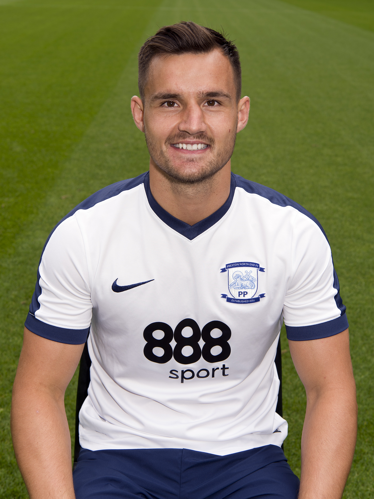

| Nombre | Posición | Edad | Bibliografía | Portada |
|---|---|---|---|---|
| Mitchell Duke | Delantero | 30 |
Mitchell Duke es delantero potente y veloz, con experiencia internacional y gran capacidad goleadora para Australia. |
|
| Jamie Maclaren | Delantero | 29 |
Jamie Maclaren es delantero goleador, conocido por su precisión frente al arco y su consistencia en competiciones nacionales e internacionales. |
|
| Mathew Leckie | Delantero / Extremo | 32 |
Mathew Leckie es versátil en ataque, capaz de jugar por las bandas y aportar velocidad, regate y asistencias a su equipo. |
|
| Awer Mabil | Delantero / Extremo | 25 |
Awer Mabil es joven y explosivo, destaca por su velocidad y habilidad para desbordar defensas rivales y crear oportunidades de gol. |
|
| Martin Boyle | Delantero / Extremo | 28 |
Martin Boyle es extremo habilidoso, aporta velocidad, regate y capacidad de definir frente al arco. |
|
| Ajdin Hrustic | Mediocampista | 26 |
Ajdin Hrustic es mediocampista creativo, capaz de generar juego ofensivo y asistir a sus compañeros en ataque. |
|
| Aaron Mooy | Mediocampista | 30 |
Aaron Mooy es mediocampista central, con gran visión de juego y capacidad para controlar el ritmo del partido. |
|
| Jackson Irvine | Mediocampista | 29 |
Jackson Irvine es mediocampista box-to-box, combina resistencia física con calidad para recuperar y distribuir balones. |
|
| Bailey Wright | Defensa central | 30 |
Bailey Wright es defensa sólido y confiable, aporta fuerza en la zaga y capacidad de juego aéreo. |
 |
| Aziz Behich | Lateral izquierdo | 30 |
Aziz Behich es lateral rápido y ofensivo, combina tareas defensivas con ataques por la banda izquierda. |
|
| Harry Souttar | Defensa central | 25 |
Harry Souttar es defensa alto y fuerte, destacando en marcaje y juego aéreo, clave en la zaga australiana. |
|
| Mathew Ryan | Portero | 32 |
Mathew Ryan es portero experimentado, seguro bajo los tres palos y líder defensivo de la selección australiana. |